Dmitry Yarotsky’s research page
Hello, I’m an applied mathematician working on neural networks, optimization, mathematical physics, and other topics.
My Google Scholar. Email to: yarotsky at Google mail.
Below is some of my work.
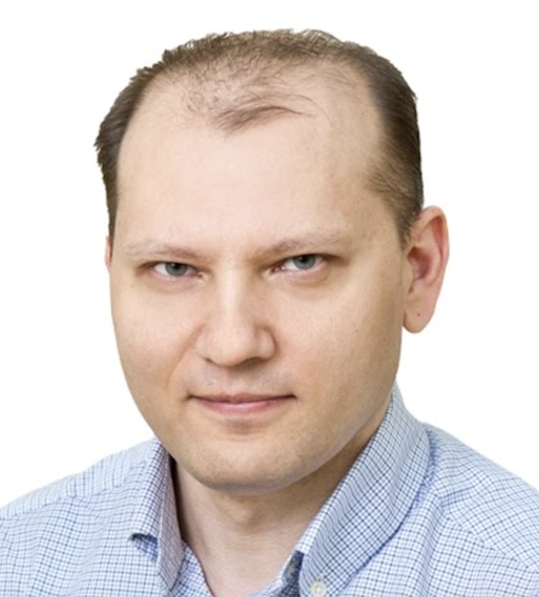
Learning regimes and loss evolution via diagram expansions
For nonlinear machine learning models, it is generally difficult to theoretically derive explicit gradient flow trajectories. Moreover, while there are special regimes such as underparameterized, overparameterized, NTK, mean-field, etc., in which the model may be solvable, there seems to be no general classification of these regimes.
We propose such a classification based on small-\(t\) power-series expansion of the loss evolution (Yarotsky et al. 2026): \[L(t)\sim\sum_{s=0}^{\infty}(\tfrac{1}{2}D-R)^{\star(s+1)}\frac{(-t)^s}{s!}\] The terms \(D\) and \(R\) correspond to self-interaction of the model and the model-target interaction, respectively. For some problems such as fitting a tensor by a finite-rank approximation, the terms of the expansion have a suggestive interpretation as diagrams (akin to Feynman diagrams). There is a “diagram calculus” describing various operations with the power series coefficients. Different types of diagrams correspond to different problems or extreme learning regimes.
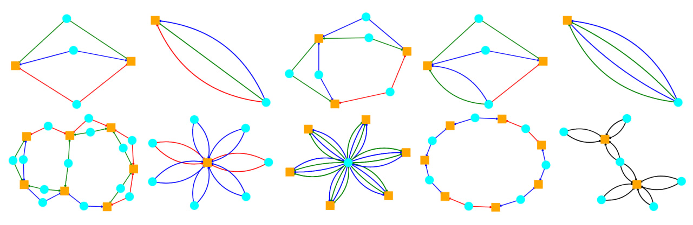
In some cases, the series of diagrams can be summed to produce results well matching the experiment.
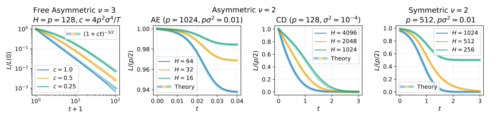
Acceleration of Gradient Descent on ill-conditioned quadratic problems
A fundamental topic for machine-learning and some other fields is gradient-based numerical minimization of quadratic functions \(L(\mathbf w)=\tfrac{1}{2}\mathbf w^\top \mathbf H\mathbf w-\mathbf w^\top \mathbf b\). Real-life quadratic functions are typically ill-conditioned, i.e. have a large ratio \(\frac{\lambda_{\max}}{\lambda_{\min}}\) between the maximum and minimum eigenvalues of \(\mathbf H\). The difficulty in optimizing ill-conditioned objectives is the conflict between optimal learning rates for large and small eigenvalues: large eigenvalues require small learning rates to avoid divergence in respective eigenspaces, while for small eigenvalues these small learning rates slow down optimization.
Theoretically, it is convenient to describe high-dimensional ill-conditioned problems by spectral power laws. Let \(\lambda_k\) be the \(k\)’th largest eigenvalue and \(c_k\) be the respective eigencoefficient of the minimizer \(\mathbf w_*=\mathbf H^{-1}\mathbf b\). We can then assume that there are two exponents \(\nu, \zeta\) that describe the decay of eigenvalues and the spectral measure of \(\mathbf w_*\): \[\begin{align} \lambda_k\propto{}& k^{-\nu},\quad k\to\infty\\ \sum_{k:\lambda<\lambda}\lambda_k c_k^2\propto{}& \lambda^{-\zeta},\quad \lambda\searrow 0. \end{align}\] It is easy to check that under these conditions (in fact, only the second condition matters) plain gradient descent with a constant learning rate converges as \[L(\mathbf w_t)\propto t^{-\zeta}.\] This convergence can be accelerated by using multi-step algorithms or non-constant learning rates, e.g. \[\mathbf w_{t+1}=\mathbf w_t-\alpha_t\nabla L(\mathbf w_t)+\beta_t(\mathbf w_{t}-\mathbf w_{t-1}).\] This acceleration question has been studied by multiple authors starting from Nemirovsky and Polyak in 1980’s. In our paper (Velikanov and Yarotsky 2024) we filled some gaps in prior results, obtaining a more or less complete picture of tight convergence bounds in a range of different general scenarios. In the table below, the exponents \(\zeta, 2\zeta, (2+\nu)\zeta\) are optimal for the respective cells, i.e. cannot be improved in general. In the multi-step/adaptive-learning-rate scenario, the exponent \(2\zeta\) holds if the eigenvalue decay condition is not assumed.
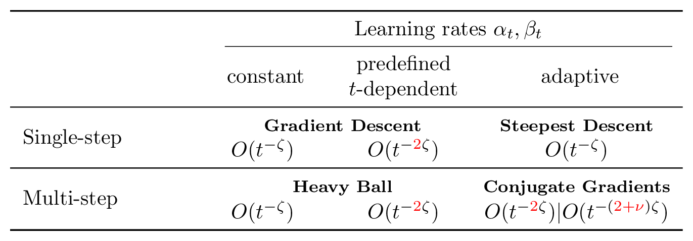
Learnability of high-dimensional targets by two-parameter models
In machine learning, it is usually expected that to learn objects forming a \(d\)-dimensional manifold one needs a model with \(d\) or more parameters. A larger number of parameters can in fact help to avoid spurious local minima and reach a good fit.
Nevertheless, we can ask if a more or less reliable learning by gradient flow is still possible if the number of parameters is smaller than the dimension of the target manifold. It is not hard to show that this setting has various pathological features: for example, the target manifold must have a dense subset of non-learnable targets.
However, I show in (Yarotsky 2024) that, given a probability distribution on the \(d\)-dimensional target manifold, it is possible to construct a 2-parameter model that will successfully learn targets by gradient flow with arbitrarily high probability. The learnable targets form a fat Cantor subset, and one of the two parameters controls the proximity of the model to the set of learnable targets, while the other controls the position along the “Cantor boundary”.
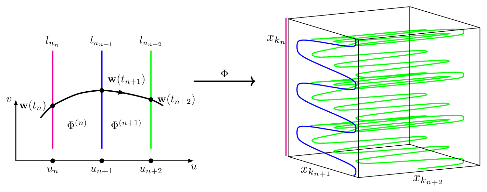
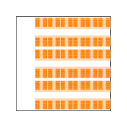
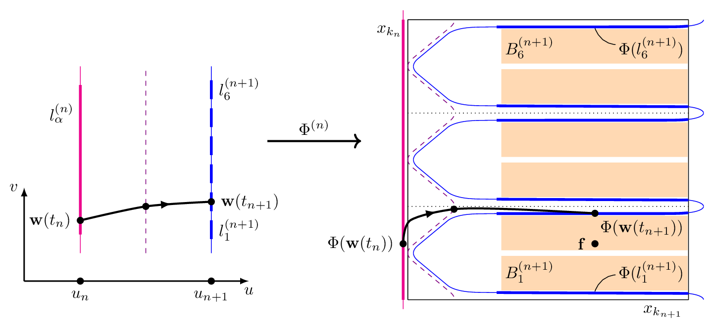
Elementary superexpressive activations
The well-known universal approximation theorem states that neural networks can approximate any function with arbitrarily small error if we make the network large enough. But can we achieve this without increasing the network? Maiorov and Pinkus have shown in 1999 that this is possible if we use some very special activation functions - a fixed-size network can then fit any continuous function on any compact domain with any accuracy merely by adjusting the weights. The respective activation functions are analytic and monotone, but otherwise quite complicated, in particular not elementary.
I proposed to call such activations “superexpressive” and proved that there exists elementary superexpressive activations (Yarotsky 2021). The proof relies significantly on the density of irrational flow on the torus. For example, the network in the picture with activations \(\sin\) and \(\arcsin\) is such a superexpressive network for functions \(f:[0,1]^2\to\mathbb R\). At the same time, common non-periodic activations such as sigmoid, ReLU, ELU, softplus, etc. are not superexpressive.
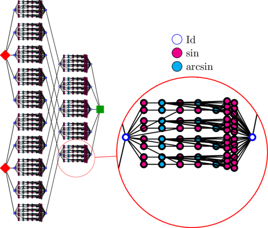
Phase diagram of approximation rates for deep ReLU networks
In this work we describe a complete phase diagram of approximation rates for deep ReLU networks (Yarotsky and Zhevnerchuk 2020). We assume that the target function \(f\) belongs to a Hölder ball \(F_{r,d}\) that, roughly speaking, consists of \(d\)-variate functions having bounded derivatives up to order \(r\). We then ask for which exponents \(p\) we can find approximations \(\widetilde f_W\) of such \(f\) by ReLU networks with \(W\) weights so that \(\|f-\widetilde f_W\|_\infty=O(W^{-p})\) as \(W\to\infty\).
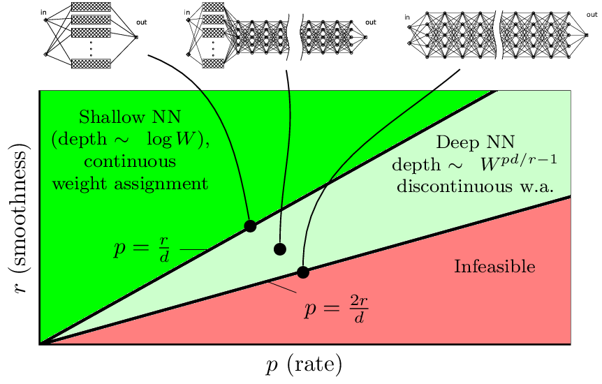
It turns out that there are two very different regimes. The “slower” regime provides approximation rates up to \(p=\tfrac{r}{d}\). This regime can be implemented by relatively shallow networks, and so that their weights depend continuously on the target. This regime is rather similar to classical linear approximation methods such as spline or Fourier expansion.
The “faster” regime is based on an entirely different idea of “weight encoding” (rather than linear constructions). This regime can provide approximation rates up to \(p=\tfrac{2r}{d}\). It requires network depths to grow as a power law in \(W\); in particular, at \(p=\tfrac{2r}{d}\) the network size fully “goes into the depth” rather than the width. The weight precision also must grow as a power law in \(W\). The weight assignment in this regime is fundamentally discontinuous.
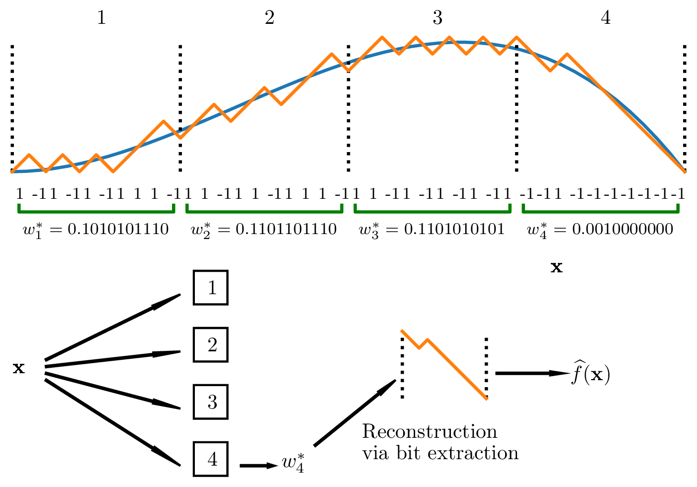
Universal approximation of invariant maps
An important idea in machine learning is to exploit the natural invariance (or more generally, equivariance) of target maps with respect to various groups of transformations (e.g., shifts, rotations, reflections, etc.). Building the relevant symmetry into the models generally makes them more efficient in terms of accuracy, complexity or training time. A standard example is the convolutional networks that are designed to be invariant with respect to grid translations.
I analyzed neural networks that are invariant and universal with respect to various groups of transformations (Yarotsky 2022). This means that the network must be not only invariant, but also capable of approximating any invariant map. This question is especially subtle in the case of groups such as the Euclidean rotation group, because it cannot be exactly implemented on finite grids on which the data is usually defined. It turns out that one can still rigorously describe neural network-type models that are provably invariant and universal even for this group, by considering a suitable limiting process (specifically, a map on the space of signals on \(\mathbb R^2\) is continuous and SE(2)-equivariant if and only if it can be approximated by models of suitable architecture in the limit of infinitely detailed discretization).
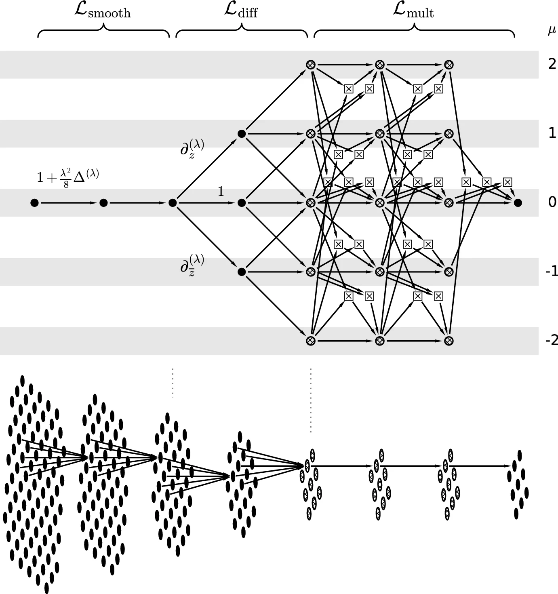
Discontinuous weight selection and emergence of subprograms
There is a general DeVore-Howard-Micchelli theorem establishing upper bounds on approximation rates of any parameterized approximation model (for example, a neural network) under assumption of continuous parameter selection. However, if the assumption of continuity is dropped, deep neural nets with a rather standard (but deep!) architecture and the standard ReLU activation function can surpass these bounds. This can be achieved by speeding up the computation with something like subprograms (Yarotsky 2017c). This construction is inspired by a construction used by Shannon in his work on Boolean circuits.
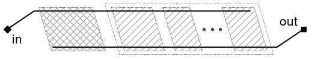
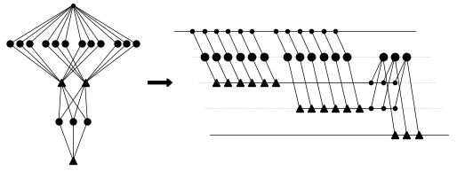
Explicit loss asymptotics in neural network training
Network training by gradient descent based algorithms is a complex process that is generally hard to analyze theoretically. In the paper (Velikanov and Yarotsky 2021) we have shown that under some reasonably general assumptions on the target function one can rather accurately describe the asymptotic evolution of the loss under gradient descent in the NTK regime.
The asymptotic behavior is given by a power law \(L(t)\sim Ct^{-\xi}\), where not only the exponent \(\xi\) but also the coefficient \(C\) can be written analytically. Our assumptions roughly say that the data distribution \(\mu\) is smooth and generic while the target is characterized by singularities of “particular order and extent”. The exponent \(\xi\) is then universal in the sense that it is only determined by the dimension of data and the type of singularity in the target and the network activation. The coefficient \(C\) is more complicated, but can still be written in terms of some integral expressions. For example, if the target belongs to the class of indicator functions of domains \(\Omega\subset\mathbb R^d\) with smooth boundary, the loss evolves by \[L(t)\sim\int_{\partial\Omega} (\mu(\mathbf x)\widetilde{\theta}_{\mathbf x}(\mathbf n))^{-\frac{1}{d+\alpha}}dS \cdot \tfrac{1}{2\pi}\Gamma(\tfrac{1}{d+\alpha}+1)\cdot(2t)^{-\frac{1}{d+\alpha}},\] with some homogeneous function \(\widetilde{\theta}_{\mathbf x}\) and value \(\alpha\) determined by the activation function and network architecture.
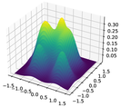
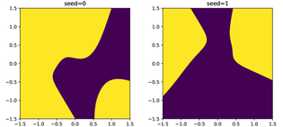
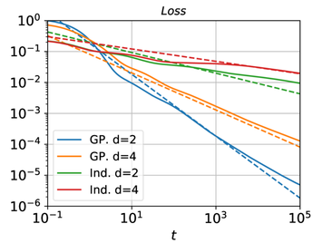
Fast approximation of smooth functions with deep ReLU networks
Smooth functions can be typically approximated more efficiently than non-smooth functions. Usually, this is achieved by choosing an approximating model of appropriate smoothness (e.g., using cubic splines rather than linear splines if the approximated function is smooth). However, deep neural networks can provide efficient - in a sense, optimal - approximation rates for smooth functions even if their activation function is only piecewise-linear such as standard ReLU (Yarotsky 2017a).
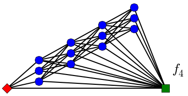
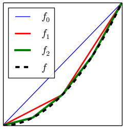
Voxel features for 3D shape recognition
I have written a small library for computation of various geometric features of voxelized 3D shapes. These features can be used in automated classification of 3D shapes, e.g. by training an XGBoost classifier (Yarotsky 2017b).
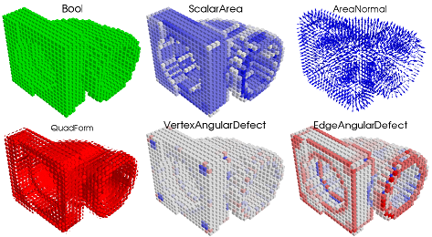
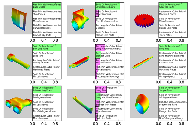
Space tether systems
Space tether systems are an interesting class of systems, potentially useful for various purposes such as space debris removal, satellite collocation, etc. In a joint work with our Astrium colleagues (Alary et al. 2015) we studied a “hub-and-spoke” pyramidal formation rotating about a central satellite and holding another satellite beneath it. Unfortunately, this configuration requires a relatively high fuel consumption.
So, in (Yarotsky et al. 2016) we proposed another, freely moving (no fuel!) formation serving the same purpose. Instead of a circle, deputy satellites now move along Lissajous curves. We find relations between the system’s parameters ensuring that the satellites and tethers never collide and the main satellite remains immobile, and show how all these relations can be satisfied.
Interestingly, the model seems to be especially stable if there are at least 5 deputy satellites. Also interestingly, the tethers can get entangled during operation; we have been able to only partially demarcate the cases of absent or present entanglement (based on the winding number invariant).
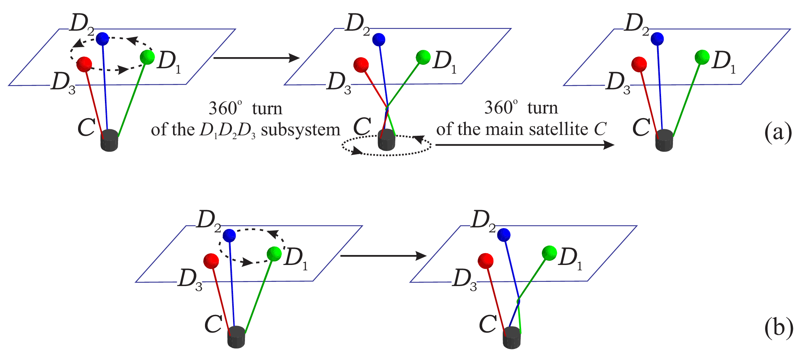
Surrogate Based Optimization (SBO)
In this post I tried to explain in simple terms the idea of SBO and its most natural version based on Expected Improvement (EI).
My research in this area concerned the following question: can EI-based SBO fail, in the sense of never getting near the true global optimum? The expected answer is “yes”, but the proof is not obvious because the behavior of SBO trajectories is not well understood on a rigorous level. I give a rigorous example of failure in a sort of “analytic black hole” scenario (Yarotsky 2013a).
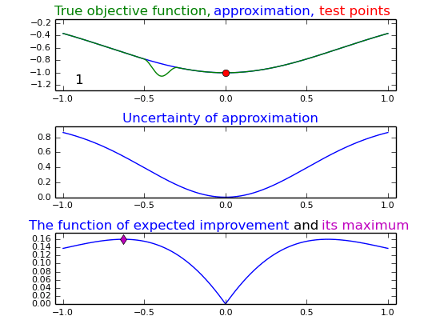
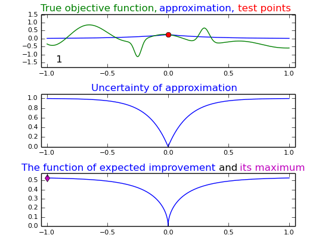
Interpolation
Explicit error formulas seem to be rare in the approximation theory. One well-known example is the beautiful integral error formula for the common polynomial interpolation with \(N\) knots \(x_1,\ldots,x_N\): \[f(x)-\widehat{f}(x)=\frac{\prod_{n=1}^N (x-x_n)}{N!} \int_{s_n\ge 0, \sum_{n=0}^N s_n=1} \frac{d^N f}{dx^N}\Big(\sum_{n=0}^N s_n x_n \Big) d\mathbf{s},\] where \(x\equiv x_0\). This formula immediately implies, for example, that the interpolants converge to the true function if it is analytic in a sufficiently large domain. I show that this formula can be generalized to interpolation by exponential or Gaussian functions using the Harish-Chandra-Itzykson-Zuber integral (Yarotsky 2013b).
In particular, for Gaussian basis functions \(e^{-(x-x_n)^2/2}\) we get \[f(x)-\widehat{f}(x) = \frac{ \prod_{n=1}^N (x-x_n) }{ N! Z} \int_{S^{2N+1}} \int_{\mathbb{U}(N)} e^{\mathrm{tr}(X U^{\dagger} P_\mathbf{v}^{\dagger} \widetilde{X} P_\mathbf{v} U)} e^{-\frac{x^2}{2}}\Big[\prod_{n=1}^N \big(\frac{d}{dq}-x_n\big)\Big] e^{\frac{q^2}{2}}f(q)\Big|_{q = \mathbf{v}^{\dagger} \widetilde{X}\mathbf{v}} d\mathbf{v}dU\] Though this expression looks complicated, it can be used to prove convergence of interpolants almost as easily as in the polynomial case. This result does not seem to generalize to more general radial basis functions; e.g. the proof breaks down even for basis functions of the form \(\sum_{k} c_k e^{-(x-x_n)^2/a_k}\). The HCIZ integral is well known in the random matrix theory, representation theory and quantum field theory; it is interesting that it also has applications to the interpolation theory.
Quantum Spin Systems
My research in this area mostly concerned rigorous analysis of ground states with the help of cluster expansions.
In (Yarotsky 2006) I developed a quadratic form-based perturbation theory and used it to prove that small perturbations of the AKLT model remain gapped (which was widely believed, but not easy to prove rigorously).
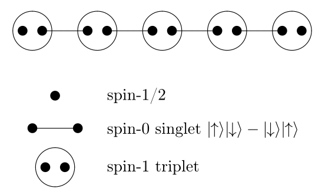
In (Yarotsky 2005) I prove uniqueness of the ground state of a weakly interacting system in a strong sense involving “most general quantum boundary conditions”, and discuss how one can interprete these conditions.
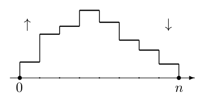
In (Yarotsky 2008) I show that the so-called “commensurate-incommensurate transition” in the AKLT model can be explained by a peculiar Poisson-type random walk with a single reversal.
My industrial experience
At Datadvance, I was one of the developers of the Macros/pSeven Core library and other custom software for optimization and predictive modeling. Our toolbox of regression methods is described in (Belyaev et al. 2016).
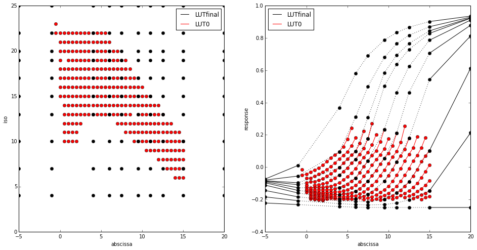
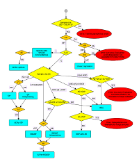
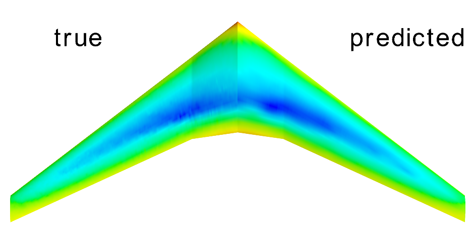